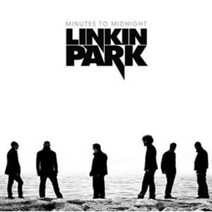

Minutes to Midnight
Album lanzado el 14 de mayo de 2007 bajo la disquera Warner Bros. Records

Linkin Park intervino en el "Summer Sonic Festival" de Jap�n el 12 y el 13 de agosto de 2006. En diciembre de 2006 se mencionaba en la p�gina del grupo que en 2007 lanzar�an un nuevo �lbum titulado Minutes to Midnight y el 6 de marzo de 2007, Mike Shinoda lo confirm� en su MySpace y en el de Linkin Park, el cual se lanz� el 15 de mayo (2007) en Estados Unidos y el 14 de mayo en los dem�s pa�ses.
El primer sencillo What I've Done fue lanzado el 2 de abril de 2007. El �lbum muestra Rock Alternativo m�s "suave" (a comparaci�n de los �lbumes anteriores) alegando una evoluci�n en su sonido. Su productor es Rick Rubin quien ha trabajado con Red Hot Chili Peppers, Audioslave, Metallica, AC/DC, Weezer, System of a Down, Limp Bizkit, Satanica, U2, Slayer y muchos otros. Hasta la fecha han salido cinco sencillos m�s. El �ltimo de estos Leave Out All The Rest, una de las tantas baladas mel�dicas junto con Shadow Of The Day incluidas en este disco.
Minutes To Midnight ha ganado m�s de 20 Discos de Oro y algunos de Platino, superando el r�cord de Madonna. La gira ten�a como previsto finalizar en Asia y posiblemente Sudamerica, pero tuvo que cancelarse debido a una lesi�n en la cadera de Chester Bennington. El 25 de Noviembre de 2008 Linkin Park lanz� su nuevo CD/DVD "Road To Revolution: Live at Milton Keynes que contiene las canciones interpretadas el 29 de Junio de 2008 en National Bowl de Milton Keynes en Inglaterra como parte de la gira Projekt Revolution 2008 en Europa. En dicho concierto estuvo el grupo Jay-Z para interpretar las canciones Numb/Encore y Jigga What/Faint, extra�das del �lbum Collision Course .
El tema What I've Done fue el tema principal del soundtrack de la pel�cula Transformers.
| # | T�tulo | Duraci�n |
|---|---|---|
| 1. | Wake | 1:43 |
| 2. | Given Up | 3:09 |
| 3. | Leave Out All The Rest | 3:29 |
| 4. | Bleed It Out | 2:44 |
| 5. | Shadow Of The Day | 4:49 |
| 6. | What I've Done | 3:28 |
| 7. | Hands Held High | 3:53 |
| 8. | No More Sorrow | 3:41 |
| 9. | Valentine's Day | 3:16 |
| 10. | In Between | 3:16 |
| 11. | In Pieces | 3:38 |
| 12. | The Little Things Give You Away | 6:25 |
Minutes To Midnight ha ganado m�s de 20 Discos de Oro y algunos de Platino, superando el r�cord de Madonna.
Chester Bennington prepara su trabajo como solista bajo el nombre de "Dead by Sunrise" con mezclas de rock de los a�os 80 y 90.
Copyright � 2009 All Rights Reserved. Please read the privacy-policy and Terms of Use